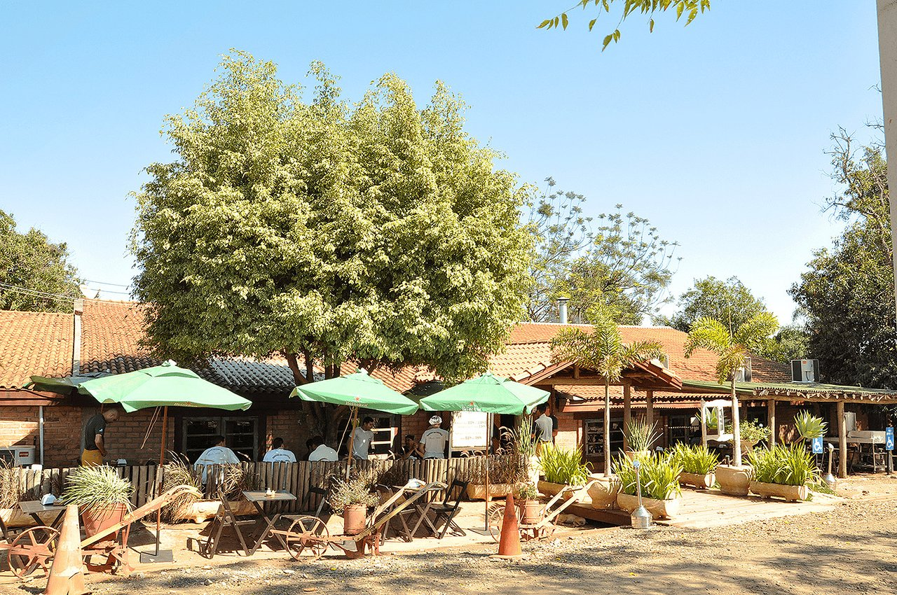

Conhecça Santa Bárbara D'Oeste
Rancho da Costela
Um restaurante típico de fazenda. Além da consagrada costela "Mais Caminhos", ofertam deliciosos pratos, sobremesas, café premium e chopp de qualidade. Tudo isso em um ambiente campestre, sereno e acolhedor. Em atividade desde 1996.
Conheça mais sobre o Rancho da Costela visitando sua página no facebook
Fazer um piquenique no Parque dos Ipês

Fazer um piquenique no Parque dos Ipês Tanto no fim de tarde quanto aos finais de semana o Parque dos Ipês é sempre um bom local para passar um tempo com a família.
Descubra mais sobre o Parque dos Ipês pesquisando no Google sobre o local.
Caminhar no Caminho dos Flamboyants

Se exercitar é sempre algo recomendável, ainda mais se for em um local agradável e perto da natureza.
Veja no Mapa aonde fica esse local.